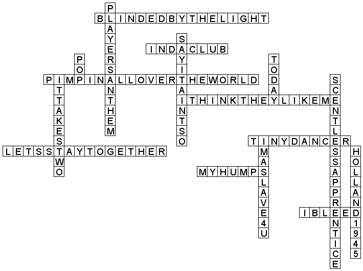

Solution to Monster Potatoes
Author: Harvey Jones
Each clue actually clues a pair of songs, which can be filled into the
corresponding grid. Each pair of songs was sampled and combined into a
single Girl Talk track. Each grid represents one of Girl Talk's three
most recent album. Take the grid crossings that correspond to two
songs that appeared in the same track together and order them by
(album, track number) to get PLAYEDSTARSHINEFREEDMAN, cluing the
answer SUZANNE CROUGH.
In case you were wondering, Monster (Mash), and (Mashed) Potatoes
clues the use of mashups.
Grid 1 (PLAYEDST)
1 P) Pop / Pimpin' All Over the World
This song featuring Ludacris and Bobby V somehow won 4 VMAs including, very fittingly, Best Pop Video.
2 L) Player's Anthem / Blinded by the Light
This planetary cover of a Bruce Springsteen song was the debut single from a group of Notorious B.I.G. proteges.
3 A) In Da Club / Say It Ain't So
This song was called the 448th best song of all time and one of the top 10 tracks of the 90s by different magazines.
4 Y) I Think They Like Me / Today
This track featuring Bow-Wow opens with an iconic Billy Corgan guitar riff.
5 E) Tiny Dancer / Scentless Apprentice
It took Kurt Cobain almost a decade of study before he was allowed to write this song jokingly said to be about Tony Danza.
6 D) Holland, 1945 / I Bleed
The title of this song makes it pretty clear that The Pixies wrote it about Anne Frank.
13 S) I'm A Slave 4 U / My Humps
This track in which Fergie bragged about being well-endowed was performed as a duet with an Albino Burmese Python.
14 T) It Takes Two / Let's Stay Together
It requires a pair of songs to make this one clue about a song made famous by Al Green and Tina Turner.
Grid 2 (ARSHINE)
1 A) Oh Pretty Woman / We're Not Gonna Take it
Tipper Gore was enraged by this song, which inspired the name of a 1990 Richard Gere film.
2 R) Pepper / Girlfriend
Avril Lavigne tries to get you to break up in this song from 1996's Electriclarryland.
3 S) So What'cha Want / Here Comes My Baby
Ad Rock name checks the author of Baby and Child Care in this song that made the Rushmore soundtrack.
4 H) Bohemian Rhapsody / You Know What It Is
Dana Carvey infamously headbangs to this 2007 T.I. single in an SNL spin-off movie.
12 I) Come On Ride It (The Train) / Saturday In The Park
This song is Peter Cetera's ode to the Davenport - Rock Island metro line and Independence Day.
13 N) Rhythm of the Night / In Between Days
After the sun sets, Robert Smith really cuts loose with some syncopated beats.
14 E) Under the Bridge / Don't Bring Me Down
This song about Anthony Kiedis's personal nadir was dedicated to Skylab.
Grid 3 (FREEDMAN)
1 F) Empire State Of Mind / Appetite For Destruction
Dr. Dre proclaims himself the new Sinatra on this song from the GTA 5 soundtrack.
2 R) Blitzkrieg Bop / Rude Boy
This song is Rihanna's ode to lightning war and its impolite practitioners.
3 E) Closer /In Your Eyes
John Cusack used this song to talk about how he wanted to feel Ione Skye from the inside.
4 E) Hypnotize / LoveGame
In this song, a Clinton Hill native claimed to mesmerize women with his disco stick.
5 D) Banned in the USA / Possum Kingdom
The video for this song about a Broward County court was believed to be a snuff film.
8 M) Bust A Move / Can't Get You Out of My Head
Kylie Minogue walks you through how to get some action at a wedding, featuring an infectious no-word chorus.
11 A) It Was A Good Day / Paint It Black
Brian Jones eschewed his AK for a sitar in this 1966 song.
12 N) Sandstorm / Imagine
Koji Uehara's walk-up music was the best-selling single of a British legend's solo career.
Grids
